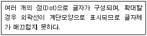
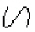
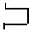
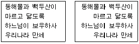
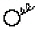
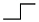
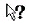
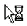
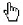
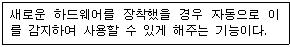

워드프로세서-3급(폐지) (2009-10-11 기출문제)
1과목: 워드프로세서 용어 및 기능
1. 다음 중 표시기능에 대한 설명으로 옳은 것은?
- 문서의 내용을 보조기억장치에 보관하는 기능이다.
- 문서의 내용 중 특정부분을 수정, 삽입, 삭제하는 기능이다.
- 문서의 내용을 화면상에 나타내 주는 기능이다.
- 문서의 내용을 컴퓨터 내부에 전달하는 기능이다.
(정답률: 71%)

2. 다음 중 작성된 문서의 파손이나 분실에 대비하여 파일을 따로 보관하는 작업을 무엇이라고 하는가?
- 링크(Link)
- 백업(Backup)
- 마진(Margin)
- 머지(Merge)
(정답률: 82%)
3. 다음 중 사진이나 그림, 삽화, 도형 등을 디지털 그래픽 정보로 바꾸어 입력하는 장치는?
- 스캐너(Scanner)
- 조이스틱(Joystick)
- 마우스(Mouse)
- 바코드 입력기(Bar Code Reader)
(정답률: 80%)
4. 다음 중 강제 개행(Carriage Return)과 관련이 있는 것은?
- [End]
- [Back Space]
- [Enter]
- [Caps Lock]
(정답률: 77%)
5. 다음 중 문서 또는 문서의 내용 검색을 쉽게 하기 위해 단어 또는 일정한 순서로 작성한 목록을 의미하는 용어는?
- 정렬(Align)
- 센터링(Centering)
- 캡션(Caption)
- 색인(Index)
(정답률: 43%)
6. [Scroll Lock]키와 가장 관련 있는 내용은?
- 화면 이동
- 대소문자 변환
- 정렬 방식
- 블록 이동
(정답률: 69%)
7. 문서작성 시 이미지나 그래픽을 삽입할 경우 기존에 만들어진 이미지나 그래픽을 사용할 수 있다. 이와 같이 미리 파일로 제작된 이미지나 그래픽의 집합을 무엇이라고 하는가?
- 클립아트(Clip Art)
- 포스트스크립트(PostScript)
- 포매터(Formatter)
- 레이어(Layer)
(정답률: 86%)
8. 다음 중 입력장치로만 짝지어진 것은?
- 터치패드 - 키보드
- 플로터 - 마우스
- OCR - 모니터
- 프린터 - 스캐너
(정답률: 79%)
9. 다음 보기의 내용은 어떤 글꼴에 대한 설명인가?

- 비트맵(Bitmap)
- 트루타입(True Type)
- 벡터(Vector)
- 오픈타입(Open Type)
(정답률: 81%)
10. 다음 중 작성한 문서의 각 페이지 하단에 인용한 문헌의 제목이나 부가되는 설명 등을 나타내는 기능은?
- 미주(Endnote)
- 각주(Footnote)
- 옵션(Option)
- 색인(Index)
(정답률: 73%)
11. 다음 중 그림을 그리거나 문서 편집을 할 때 정확한 간격에 맞추어 세밀한 편집을 할 수 있도록 본문 내부에 격자모양의 기준선을 나타내주는 기능은?
- 미리보기(Preview)
- 눈금자(Ruler)
- 상황표시줄(Status Line)
- 격자(Grid)
(정답률: 58%)
12. 다음 중 인쇄용지에 대한 설명으로 옳지 않은 것은?
- 연속용지는 라인프린터와 같은 충격식 프린터에서 주로 사용된다.
- 레이저프린터에서는 주로 낱장용지가 사용된다.
- 낱장용지의 표준 크기는 공문서 규격인 A4이다.
- 낱장용지의 크기는 A3이 B3보다 크다.
(정답률: 69%)
13. 다음 중 전 세계에서 사용하는 모든 문자의 표현이 가능하도록 만든 한글코드는 무엇인가?
- KSC C-5601
- KS X 10⑤-1
- KS X 1001 조합형
- KS X 1001 완성형
(정답률: 56%)
14. 다음 중에서 교정부호의 의미가 올바르게 설명된 것은?
- : 사이 띄우기
- : 삭제하기

: 자리 바꾸기
: 들여쓰기
(정답률: 79%)
15. 다음 중에서 액정디스플레이(LCD)나 플라즈마(Plasma) 디스플레이 등은 워드프로세서의 어느 장치에 속하는가?
- 입력장치
- 표시장치
- 기억장치
- 출력장치
(정답률: 66%)
16. 다음 중 워드프로세서의 조판기능에 해당하지 않는 것은?
- 머리말
- 꼬리말
- 각주
- 치환
(정답률: 78%)
17. 다음 중 편집화면에서 커서를 일정한 간격으로 이동할 때 사용하는 키는?
- [Caps Lock]
- [Insert]
- [Delete]
- [Tab]
(정답률: 79%)
18. 다음 중 문서의 특정 부분의 내용을 다른 부분으로 옮기고자(Move)할 때 사용하는 방법으로 옳은 것은?
- 범위선택 → 복사(Copy) → 붙일 부분으로 커서를 이동 → 붙이기(Paste)
- 범위선택 → 잘라내기(Cut) → 붙일 부분으로 커서를 이동 → 붙이기(Paste)
- 범위선택 → [Ctrl] 키를 누른 상태에서 선택된 부분을 드래그하여 원하는 곳에 놓는다.
- 범위선택 → 저장하기(Save) → 붙일 부분으로 커서를 이동 → 붙이기(Paste)
(정답률: 69%)
19. 다음 <보기>의 문장에서 사용된 정렬 방법은?

- 왼쪽 정렬에서 양쪽 정렬로 변환
- 왼쪽 정렬에서 오른쪽 정렬로 변환
- 가운데 정렬에서 오른쪽 정렬로 변환
- 오른쪽 정렬에서 왼쪽 정렬로 변환
(정답률: 84%)
20. 다음 중 문단의 줄을 바꾸는 교정부호는?


(정답률: 88%)
2과목: PC 운영 체제
21. 한글 Windows XP의 폴더 창에서 파일의 이름, 크기, 종류, 수정한 날짜 등의 정보를 나타내려고 할 경우에 [보기]메뉴에서 선택해야 하는 항목으로 옳은 것은?
- [폴더 옵션]
- [웹 페이지 형식으로]
- [자세히]
- [간단히]
(정답률: 73%)
22. 다음 중 한글 Windows XP에서 인쇄할 내용을 먼저 하드디스크에 저장하고 디스크 상의 출력 파일을 백그라운드 작업으로 프린터로 보내주는 기능은?
- 스풀링
- 인터넷 임시파일
- 캐쉬
- 파일로 인쇄하기
(정답률: 66%)
23. 다음 중 한글 Windows XP에서 파일 이름으로 설정할 수 없는 것은?
- _ABC
- abc<d>
- a$123
- a-z
(정답률: 62%)
24. 한글 Windows XP의 폴더 창에 있는 비연속적으로 위치한 파일들을 선택하기 위해 마우스와 함께 사용하는 키로 옳은 것은?
- [Esc]
- [Shift]
- [Alt]
- [Ctrl]
(정답률: 69%)
25. 다음 중 한글 Windows XP의 폴더 창에서 [Alt]+[F4] 키의 사용 용도로 옳은 것은?
- 시작 메뉴의 표시
- 창 조절 메뉴의 표시
- 선택한 항목의 바로가기 메뉴 표시
- 실행 창의 종료
(정답률: 77%)
26. 다음 중 한글 Windows XP에 설치된 프로그램을 보다 빠르게 실행하는 방법으로 옳지 않은 것은?
- 바탕 화면에 있는 바로가기 아이콘을 사용한다.
- 시작 메뉴에 있는 선택 항목을 선택한다.
- [제어판]에 있는 [실행] 도구를 사용한다.
- 빠른 실행 도구를 사용한다.
(정답률: 58%)
27. 한글 Windows XP에서 컴퓨터에 설치된 프린터의 인쇄 관리자 창에 있는 메뉴를 이용하여 할 수 있는 작업으로 옳지 않은 것은?
- 새로운 프린터의 설치
- 해당 프린터의 공유
- 기본 프린터로 지정
- 인쇄 일시 중지
(정답률: 39%)
28. 다음 중 한글 Windows XP에서 [시작] 단추의 바로가기 메뉴에 포함되어 있는 항목으로 옳지 않은 것은?
- 열기
- 검색
- 탐색
- 설정
(정답률: 55%)
29. 다음 중 한글 Windows XP에서 [시작] 메뉴에 관한 설명으로 옳지 않은 것은?
- [시작] 단추를 클릭하면 표시된다.
- 현재 실행 중인 프로그램을 나타내는 목록이 표시된다.
- 자주 사용하는 프로그램의 목록이 표시된다.
- [시작] 메뉴의 위쪽에는 현재 사용자 계정이 표시된다.
(정답률: 55%)
30. 한글 Windows XP의 [시스템 등록정보] 창에 있는 [하드웨어] 탭에서 하드웨어 드라이버를 변경하려고 할 때 선택하는 항목으로 옳은 것은?
- 고급
- 장치 관리자
- 하드웨어 초기화 파일
- 시스템 복원
(정답률: 62%)
31. 다음 중 한글 Windows XP의 [제어판]에서 몸이 불편한 장애인과 같은 특수한 상황에서 컴퓨터를 보다 쉽게 사용할 수 있도록 키보드나 마우스 등을 설정하는 프로그램으로 옳은 것은?
- [내게 필요한 옵션]
- [예약된 작업]
- [국가 및 언어 옵션]
- [시스템]
(정답률: 82%)
32. 다음 중 한글 Windows XP의 바탕화면에서 아이콘의 바로가기 메뉴를 이용하여 이름 바꾸기를 할 수 없는 것은?
- 내 컴퓨터
- 내 네트워크 환경
- 휴지통
- 내 문서
(정답률: 86%)
33. 다음 중 한글 Windows XP에서 마우스로 선택한 파일이나 폴더를 [휴지통]에 넣지 않고 영구히 삭제할 때 사용하는 바로가기 키는?
- [Alt]+[Delete]
- [Ctrl]+[Delete]
- [Esc]+[Delete]
- [Shift]+[Delete]
(정답률: 59%)
34. 다음 중 한글 Windows XP에서 마우스 포인터에 관한 설명으로 옳지 않은 것은?

: 도움말
: 이동- : 알 수 없음

: 연결 선택
(정답률: 75%)
35. 한글 Windows XP에서 미리 정의된 아이콘, 글꼴, 색, 소리 및 다른 창 요소의 집합을 사용하여 바탕화면을 개성 있게 연출하는 방법으로 옳은 것은?
- 멀티미디어
- 바탕화면 테마
- 화면 보호기
- 원격 데스크톱
(정답률: 60%)
36. 한글 Windows XP에서 폴더 창에 있는 모든 파일이나 폴더를 전체 선택하기 위하여 사용하는 바로가기 키로 옳은 것은?
- [Ctrl]+[A]
- [Ctrl]+[F]
- [Ctrl]+[X]
- [Ctrl]+[C]
(정답률: 77%)
37. 한글 Windows XP의 [탐색기] 창에서 [보기] 메뉴의 하위 선택 항목이 아닌 것은?
- 큰 아이콘
- 간단히
- 중간 아이콘
- 자세히
(정답률: 69%)
38. 한글 Windows XP에서 다음 보기의 내용이 의미하는 것은?

- OLE(Object Linked and Embedding)
- PWS(Personal Web Server)
- PnP(Plug and Play)
- GUI(Graphic User Interface)
(정답률: 65%)
39. 한글 Windows XP에서 현재 실행 중인 여러 프로그램 들을 순서대로 전환하기 위하여 사용하는 바로가기 키는?
- [Alt]+[Esc]
- [Ctrl]+[Esc]
- [Shift]+[Esc]
- [Shift]+[Tab]
(정답률: 46%)
40. 다음 중 한글 Windows XP의 바탕 화면에서 파일이나 폴더를 검색하기 위한 [검색 결과] 창을 호출하기 위해 사용하는 바로가기 키는?
- [F1]
- [F2]
- [F3]
- [F4]
(정답률: 63%)